What makes a block of resin read as rock, from the silhouette down to the grain, with the numbers to build it. Nine primitives, the logic that assembles them, the mistakes of about twenty-five rounds on Walls N and O, and a recipe for building a wall from nothing.
Every model on this page is built by code on the page (a heightfield or a set of half-spaces; three.js only draws it). Drag a model to turn it; move its sliders to change it. Numbers are in mm at the 35 mm square; the generated sheets are drawn at 25 mm, so their millimetres are multiplied by 1.4 and their ratios kept. Sheet numbers are guidance, not measurements. Where a sheet and the unpainted photos disagree, the photos win, and the page says so.
1 · What makes rock read as rock
Three scales, one budget
A rock reads at three distances. The silhouette and the main masses are read first, the breaks and ledges second, the surface last. The family guide gives the share of the read each carries, and our rounds on N and O agreed with it the hard way: when the surface got most of the work, the wall read as noise.
Form 70–80%
Structure 15–25%
Surface 5–10%
Scale
Feature size at 35 mm
Does
Examples
Sheet (25 mm)
Form (macro)
35–280, 1–5 dominant masses
silhouette and primary volumes
wall, terrace, spire; tiers; the ramp
25–200+, 70–80%
Structure (meso)
7–70
layers, breaks, block boundaries, the form’s internal rhythm
courses, ledges, big fractures, slab ends
5–50, 15–25%
Surface (small)
1.4–7
wear and material character; keep it restrained
chips, small steps, pits, grooves, eased edges
1–5, 5–10%
Grain (micro)
0.4–2.1
roughness; only under strong detail
pitting, striations, tool texture
0.3–1.5
The 0.4 mm floor is the printer’s and is not scaled. Feature size under 0.4 mm is removed; under 0.6 to 1.0 mm is fragile (rock sheet, 9).
Where each scale shows, on the unpainted panels
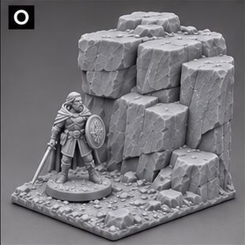
Panel O, unpainted. Dashed outline: form. Numbers: where structure and surface show.
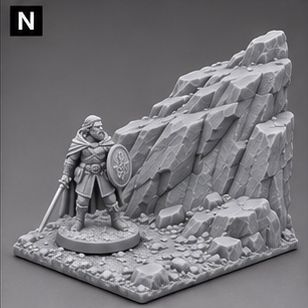
Panel N, unpainted.
1Form. O: stacked blocks stepping up to the right, in three tiers, a cap on top. The dashed outline is the whole read at arm’s length.
2Course joint. A level bed between two courses, 11.5 to 14.5 mm apart.
3Cap and shelf planes, near level (0–10°), lit from above.
4Vertical block face, 85–90°, with a few fracture lines.
5Offset. One block stands forward of its neighbour: the tier’s setback.
6Corner chip. A plane taken off a top corner.
7Broken face. A few planes bent a little, cut by fine lines.
8Pits and small chips, in patches, on the tops.
1Form (N). One ramp rising to the back right. In section the panel reads about 50°; the sheets say 32–38° and 30–35°. The panel wins.
2Bedding steps. Long ledges running up the slope, parallel to the dip.
3Cross crack, leaning off square, ending inside a slab.
4Slab face. The free face is the bed plane; slabs are thin and long (about 2.5:1 to 5:1).
5Chipped lips on the slab edges, bright and turned up.
6Facets on the slab faces: a few planes, never a mosaic.
7Shallow groove along a slab.
Reading the photosBoth panels spend nearly all their geometry at form and structure. The surface scale is small, sparse and clustered. Painted sheets fake much of it with paint, which is why the unpainted panels are the target.
2 · The primitives, one by one
Nine building blocks
Each row is a model built for this page (left), a section cut through the same height function with its measurements (middle), the numbers at 35 mm, and the sheet panel it matches (right). The section is drawn at true scale in both directions. Every model has sliders that run through the ranges beside it; where the flat-rock sheet and the rock sheet (or the rock sheet and the N and O sheets) give different ranges, a switch above the model chooses the sheet, and each sheet has its own model and defaults. All models are solid and closed.
Planes and facet changes
primitive 1 of 9
A plane is a broad, nearly flat face. A facet change is where one plane meets the next at a small angle. This is the structure of rock: the planes carry the form, and a crease between them is a line, not a gap. The model is one skin, so the planes can never separate.
At the flat sheet’s defaults, three planes 2.2° to 3.4°. At these real angles the creases are faint; the plane-change slider makes them plain.
flat sheet ×1.4
change 1–5° (to 8°), span 7–70, height 0.3–1.4
rock sheet ×1.4
plane 5–45°, size 7–70+, irregularity ±1.4–7
this model
rule
creases wander ±1.6 mm; no two neighbouring planes parallel
Rock sheet, 2. Surface detail: Facet (plane)
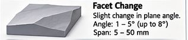
Flat-rock sheet, C: Facet Change
Breaks and edges
primitive 2 of 9
A break is where two planes meet. Its sharpness is a choice made edge by edge: seven in ten are eased, three in ten stay crisp. Sharp everywhere reads as a box, soft everywhere reads as a pebble. Left to right: sharp, crisp (0.45 mm), eased (2.4 mm in three tangent planes), eased with three corner chips.
At the defaults, four blocks, 11 × 11 × 9 mm.
angle between planes
60–110° (rock sheet)
chamfer, rock sheet
0–2 mm, ×1.4 = 0–2.8 mm
edge bevel, N and O sheet
0.5–2.0 mm, ×1.4 = 0.7–2.8 mm
top-front bevel (meso)
2–6 mm, ×1.4 = 2.8–8.4; our O used 1.6–3.4
mix
70% soft or worn, 30% crisp
this model
Rock sheet, 2: Edge (break), 60–110°, chamfer 0–2
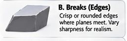
Rock sheet, 1B: Breaks (edges)
Steps and ledges
primitive 3 of 9
Offsets and ledges come from fracture layers. A ledge is a tread (nearly level, tilted back a few degrees) and a riser (steep). The lip is never a straight line. Ledges give the silhouette its rhythm and give a base wide enough to stand on.
At the rock sheet’s defaults, three risers of about 3 mm; the flat treads, about 8 mm deep, tilt back 3°.
rock sheet ×1.4
height 2.8–21, depth 7–56, H:D 1:2 to 1:6
N and O sheets
step height .10–.30 H; ledge depth .10–.35 H (O)
risers / treads
70–90° / 0–10° (family guide)
this model
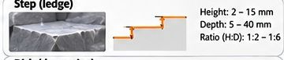
Rock sheet, 2: Step (ledge)
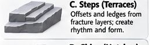
Rock sheet, 1C: Steps (terraces)
Chips and notches
primitive 4 of 9
A chip is a removal: a flat floor, a steep wall, an outline made of straight runs. It is one plane cut into the surface, so it stays one piece. Chips sit on edges and corners: every chip in the references takes a piece out of an edge or a corner, none sits in the middle of a plane (a removal there is a dish or a pit). The section runs along the front edge, through the notch.
At the flat sheet’s defaults, a chip 11 mm along the front edge and 5.5 mm into the top, its floor falling 3.4° toward the edge and its wall at 45°, and a small chip off the corner.
flat sheet ×1.4
depth 0.3–2.1, size 1.4–11, edge angle 15–45°
rock sheet ×1.4
depth 1.4–7, width 2.8–21, wall 45–80°
our corner chip
0.12–0.3 of the piece’s narrow side, on 30% of top corners, 0–2 per block
this model
Flat-rock sheet, C: Chip / Flake
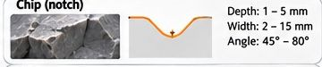
Rock sheet, 2: Chip (notch)
Dishes
primitive 5a of 9
A dish is a shallow, broad, irregular scoop. It must not be round or evenly spaced; Shawn found the explorer’s round pockets “not quite organic and irregular enough”. This one is elliptical, turned off the grid, deeper on one side, with a rim that wanders.
At the flat sheet’s defaults, one elliptical dish, 25 × 16 mm.
flat sheet ×1.4
depth 0.3–1.4, width 7–42, concave and gentle
rock sheet ×1.4
depth 0.7–7, width 4–35, depth to width 1:6 to 1:10
this model
Flat-rock sheet, C: Shallow Dish / Scoop
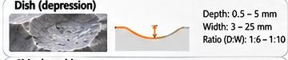
Rock sheet, 2: Dish (depression)
Pits
primitive 5b of 9
Pits are small, clustered, uneven in size. A lattice of identical pits is the mistake the sheets warn about (“avoid uniform pitting”). Nothing under 0.4 mm is printed, whatever the scale.
At the flat sheet’s defaults, pits in three clusters, diameter 0.8 to 2.8 mm.
flat sheet ×1.4
diameter 0.4 (print floor)–2.8, depth 0.15–0.85
rock sheet ×1.4
pits and dishes 1.4–14 across
share of a face
one patch in three or four, never the whole face
this model
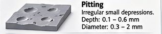
Flat-rock sheet, C: Pitting
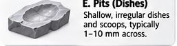
Rock sheet, 1E: Pits (dishes)
Ridges and swells
primitive 6 of 9
A ridge is a raised band (a vein, a weathering line, a fracture pillar). Its crest is rounded or angular, and it fades out instead of ending in a cap. A swell is the same idea broad and round.
At the flat sheet’s defaults, an angular ridge that fades, and a round swell.
A crack is a narrow groove that runs from the edge of a plane to the edge of another plane, or stops on the crack it meets. It never dies out in the middle of a face. It runs in straight lengths with angular kinks, not curves; its width changes along its length; its lips are chipped; and one side often sits a little proud of the other. A hairline of 0.1 mm cannot be printed, so a crack is at least 0.4 mm wide at half depth and reads by its dark shadow.
At the defaults, a main crack crosses a 30 mm plate edge to edge; one crack comes in from the edge and stops on it, another leaves it for the opposite edge. The four planes are tilted and a little apart in height.
flat sheet ×1.4
width 0.15–0.7 (print floor 0.4), depth 0.15–1.1, length 7–70+ (the slider sets the plate the crack crosses)
plate tilt
1–5° (facet change, flat sheet), so a crack is also a step between planes
where it ends
at the edge of a plane, or on another crack; never in the middle of a face
this model
Flat-rock sheet, C: Crack / FissureFlat-rock sheet, B: the close-up, hairline crack at right
Undulation
primitive 8 of 9
Undulation is the lowest, broadest relief: no feature in it stands out, and it is what stops a flat from looking machined. It is the macro layer of the flat-rock sheet. Each swell has its own height from crest to trough; the end-to-end tilt of the whole piece is a separate slope that adds to the overall range, so the overall top-to-bottom figure is larger than a swell.
At the defaults, swells 1.5 mm from crest to trough and 20 mm crest to crest, on a 2° end-to-end tilt, on a 40 mm patch. The section marks the largest swell and the overall range separately.
flat sheet ×1.4
swell 0.7–2.8 peak to trough, width 14–56, end-to-end slope 1–4°
total relief of a flat
1.4–2.8 mm peak to low (to 4.2), swells and tilt together
this model
Flat-rock sheet, D: surface profile
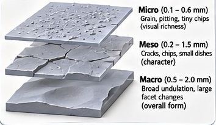
Flat-rock sheet, F: macro, meso, micro
Grain and striation
primitive 9 of 9
Grain is the finest layer. It lies on a few bedded slab faces with steps between them, and on each slab the striations run along the slab: long, fine, parallel ridges and grooves that follow its direction. Each slab turns a few degrees from its neighbour. It is the last thing added, because it is only worth anything under strong detail. Below 0.4 mm the printer will not follow.
At the flat sheet’s defaults, six bedded slabs with steps of up to 0.4 mm between them, striations 1.1 mm apart at 14°, texture 0.4 mm deep, on a 24 × 24 mm patch. The rock-sheet variant at its depth of 2 mm and wide spacing reaches the striated slabs of the family guide.
flat sheet ×1.4
micro 0.15–0.85 deep; tool floor 0.4 mm (not scaled)
rock sheet ×1.4
micro texture 0.4–2.1 (the striated slabs of panel 7 sit near 1–2)
striations
spacing 0.4–2.5 (flat) or 0.6–5 (rock); direction 0–60° off the slab edge; a step of 0–1.2 or 0–2.1 between slabs
share of the read
5–10% (family guide)
this model
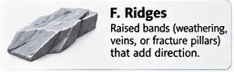
Rock sheet, 1F and the micro layer
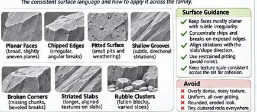
Family guide, 7: texture language (striated slabs)
How well the models match their panelsClose: dish, pits, ridge, chip, crack, steps and the eight forms read the same as their sheet panels in kind, size and proportion (pits are a little small and shallow against the sheet’s, whose rims are raised).
Partial: the facet change (the true angles are 1–5°, so at the real angles the crease is faint) and the blocks (eased edges, chips, courses), which are planar and clean where the photos are hewn: they carry planes, chamfers, bends and chips but not the photos’ fine broken facets. The shingled slabs read as shingles but are shorter and fatter than the photo’s long blades. Levels illustrates the idea and does not try to look like the photos. The O block in context reads as O’s wide blocks with long cracks across their faces, though its faces are clean where the photo’s are hewn.
Not matched: the photographic roughness of the sheets’ close-ups, which a printed surface cannot carry (nothing under 0.4 mm).
3 · Formation logic
How the primitives assemble
Plane families and their angles
A rock formation has few angles, repeated. The family guide lists them; the N and O sheets narrow them for each wall. Everything on a wall belongs to one of these families; a face at some other angle is a mistake of the shard kind.
Family
Angle
Wall N
Wall O
Vertical faces
85–90°
breaks 80–90°
dominant, 80–90°
Sloped faces
15–70°, typical 25–60°
main slope; sheet 30–35°, panel about 50°
stepped faces 20–45°, transitional
Shelves, ledges, caps
0–10°
narrow, 0–15°
cap and shelf planes 0–10°
Diagonal cleavage
30–60°, about 45°
major fractures 30–40° (set A)
secondary joints 60–75°
Terrace risers
70–90°
step risers
block faces secondary 70–85°
Fracture intersections
60–120°, about 90°
cross joints 60–75°
vertical joints 80–90°
Undercuts
over 100°
small
local
Family guide, 5: angle familiesStudy: plane-family analysis, N
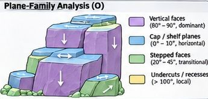
Study: plane-family analysis, O
Overhang: 55° is every element’s target; 55–65° is a band allowed on 0.1% of the downward-facing area, and over 65° on another 0.1%. A face that leans out is the one thing a print cannot do.
Fracture sets and persistence
Rock breaks along one to three dominant sets, 20–60° apart. A set is a family of near-parallel cracks. A crack of one set runs through the whole mass (carry 1) or only to the next crack of another set (carry near 0.1–0.35). N wants low carry: at carry 1 the sets make a tilted brick grid; at 0 to 0.15 they read as broken slabs. O joints repeat the joint below about a third of the time.
Persistence. A crack of a finer level lives inside its parent cell and never crosses the parent’s edge. Where it ends is a rule too: on the edge of its plane or on another crack, never in the middle of a face. Seen in the reference: a crack stops where it meets another crack or a facet edge, or runs off the edge of the plane; none dies out in the middle of a face.
Minimum piece. No cell is narrower than 0.4 of the level’s spacing; a crack that would leave a sliver is skipped. Both walls needed this to stop slivers.
A tapering crack. One side of the crack tilts along it so the step between the two sides shrinks to nothing toward one end (a gradient of at most 0.1).
Study: fracture system, N (slope 30–35°, majors 30–40°, cross joints 60–75°)Study: fracture system, O (verticals 80–90°, secondary 60–75°, bedding 0–10°)
One mass: levels, and an O block with a skin piece
The references are one body of rock that has broken along a few directions at several sizes, not pieces set side by side. A level is the same cutting again inside each cell of the level above. Only the face moves, so the mass stays one body: a piece moves its own share of the free face (set back and turned) and the rock behind stays whole. O calls it a skin piece, N a riser against the rock behind.
Three levels on one slab, 34 × 34 mm, at the defaults. No gaps; the base is shared.
A course of three blocks, 13 mm high, at the defaults: eased top edges, a corner chip, long cracks across whole faces. In the middle block one face is split once; the smaller piece is set back 0.2 mm and turned 0.6°. All solid; the cutaway shows the section.
Offset per level
a tenth to 0.4 of the level above: N 0.4 (1.5, 0.6, 0.25 mm); O skin about a tenth of the block’s own push, and half looked like rubble
Levels
3 on N (12×40, 8×18, 5×9 mm cells), the finest on 50–80% of cells; 2 on O (blocks, then a skin 3–4 mm deep)
Skin piece
one face split once, the smaller piece set back 0.1–0.3 and turned 0.2–1.2°; most faces stay whole and carry long cracks 0.4–0.8 wide (the earlier 5–9 mm pieces, 1.9 setbacks and 9° leans read as rubble)
Every free face
N’s crest and end read as a box until they were cut like the slope
Layering and shingling (N)
N is a ramp of long thin slabs bedded about 40°, rising to the back right. The free face is the bed plane. Slabs are thin (2–5 mm) and recede inward by their own thickness, and each slab ends at its own line a drawn distance back, so the steps are the slab edges. The cross cut leans, but not far.
At the defaults: six slabs on a 50° bed plane, twelve prisms, over one darker core.
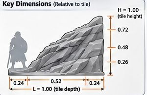
N and O sheet: key dimensions, N
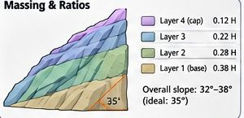
N and O sheet: massing and ratios, N
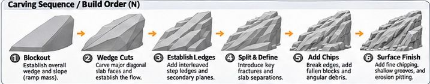
Study: carving sequence, N
Stacked blocks, caps, shelves and tiers (O)
O is a stack of mostly vertical blocks on level beds. The N and O sheet gives four layers sharing H as .26 / .26 / .28 / .20 from base to top, and a block footprint of 1.6 to 2.4 : 1 (width : height). The model carries both, and one thing more that the crop and the photo show and no number states: the layers step back, and the blocks get smaller going up, in width and in height, so no course is a row of equal blocks. Where a layer’s blocks would be too tall for its fall-off it is cut into two courses. With the fall-off at none, the upper blocks are as large as the base blocks and the mass reads as a stack of toy blocks; with it raised it reads as stone. Block outlines are irregular and slightly rounded.
At the defaults: four layers (.26 / .26 / .28 / .20 H) stepping back; blocks about 2 : 1 at the base and smaller in each layer above. Set the fall-off to 0 to see equal blocks.
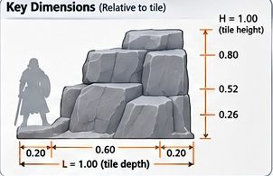
N and O sheet: key dimensions, ON and O sheet: massing and ratios, O
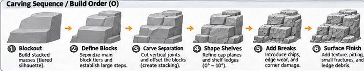
Study: carving sequence, O
The eight characteristic surface forms
The rock sheet names eight forms and the angle or ratio of each. Each patch below is built from the primitives above with that form’s numbers; the sheet crop is under it.
Flat faceted
22 × 22 mm patch
10–30°
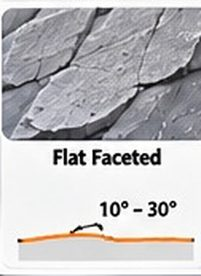
Rock sheet, 5
Layered / bedded
22 × 22 mm patch
0–15°
Rock sheet, 5
Fractured blocky
22 × 22 mm patch
70–110°
Rock sheet, 5
The crop is a face seen head on; here the block tops are seen from above, with the same bent planes, mixed edges and chips.
Sheared / inclined
22 × 22 mm patch
25–45°
Rock sheet, 5
Weathered / rounded
22 × 22 mm patch
R 7–35 mm
Rock sheet, 5
A heightfield cannot undercut the crop’s rims, so its hollows are shallow dimples.
Pitted / eroded
22 × 22 mm patch
D:W 1:6–1:10
Rock sheet, 5
Cracked network
22 × 22 mm patch
30–120°
Rock sheet, 5
Columnar / vertical
22 × 22 mm patch
80–95°
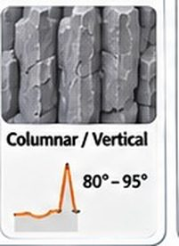
Rock sheet, 5
The crop is a vertical face seen head on. A patch can only show the column tops and the near-vertical walls between them (80–90°, never undercut), turned a little to the camera.
4 · Edges
Seven soft, three crisp
Vary edge sharpness: 70% soft or worn, 30% crisp (flat sheet, I). Eased edges and chips at corners and edges matter most; Shawn on our rounds: “our corner chipping has good value here”. A chamfer of 1 to 2 mm at the scale of a wall is the usual size, with a larger bevel of 1.6 to 3.4 mm along the top-front edge of most blocks.
One block, 18 × 14 × 13 mm: at the defaults: faces leaning 1.5–4°, top edges eased, a top-front bevel of 3 mm, a side bevel, three corner chips.
Soft edge
0.7–2.8 mm eased (3 tangent planes make a round with no new vertex count to speak of); the top-front edge 1.6–3.4
Crisp edge
0–0.5 mm chamfer, kept crisp so the plane still reads
Lip on a slab (N)
85% of top edges, 28–52°, 0.5–1.1 mm, no longer than 0.18 of the edge
Corner chip
on 30% of the top corners of a leaf cell; one plane along the averaged normal of the faces that meet there, tilted up to 25°, taking 0.12–0.3 of the cell’s narrow side
Count
0–2 per block on O (0.9–2.8 mm deep), 0–2 per cell on N (up to 3.2). Three or more big ones per block bring the pillows back
Where
edges and corners of every leaf cell, never the floor and never a joint (a chip on a joint opens a hole)
5 · Patterns
Five surface patterns as patches
A surface is one pattern, chosen for the rock and applied as patches, not everywhere. Each is a blend of two or three scales: macro (0.7–2.8 mm of broad relief), meso (cracks, chips, small dishes, 0.3–2.1 mm) and micro (grain and pits, 0.15–0.85 mm). Blending two or three scales gives the most natural look.
Subtle and worn
30 × 30 mm patch
undulation, a few small pits and one soft chip off the front edge, almost no cracks
Fractured plates
30 × 30 mm patch
large plates, shallow steps and 3° tilts between them, chips at the plate edges
Pitted and weathered
30 × 30 mm patch
clustered pits of every size, a few shallow dishes, soft rounded edges
Layered and veined
30 × 30 mm patch
low flowing ridges and layer lines, one raised vein crossing them
Cracked network
30 × 30 mm patch
near-level plates of 6–10 mm with small tilts and steps between them, cut all round by crack lines, 30–120° corners
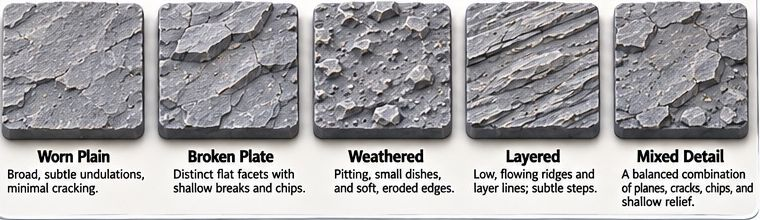
Flat-rock sheet, H: the five variations at the same scale; and G, the patterns top down
6 · What our rounds taught
Nine ways to get it wrong
About twenty-five rounds on N and O, each pair of pictures judged by eye against the panel. The images are our own renders from those rounds (cropped); the page models stand in where we did not keep a picture.
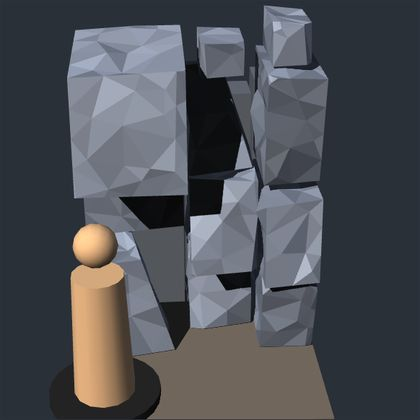
Plates open slits
Splitting a surface into tilted polygons makes plates. Plates overlap, and where they do not, a slit opens to the inside. O rounds 3 to 5. The method was wrong, not the settings. Fix: everything stays solid; a piece moves only its share of the face.
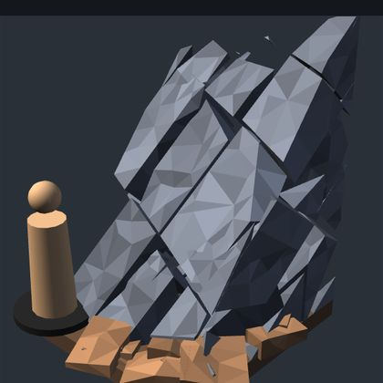
Crystal shards
Faces turned at many angles read as quartz. N rounds 1 to 3. Slab faces within a few degrees of one another read as rock; the variety comes from where the lips start and stop. Cross cuts: off square by up to 12° is chipped, over 25° is a shard.
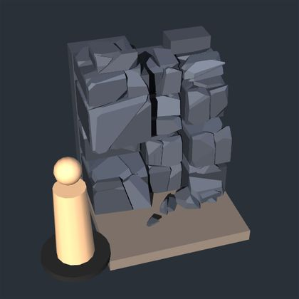
Rubble
Too many pieces, or offsets too large, read as a dry-stone wall. O pass 3 (every block skinned into stones). Offsets per level are a tenth to 0.4 of the level above, and fewer, bigger faces carry the look.
Triangulated relief
Jittered points under a Delaunay triangulation made crumpled foil, not hewn stone. A face is bent by two or three planes and cut by a few straight cracks; points are not scattered.
A pit as a cell inside a cell
Subtracting a convex pit cell from a convex cell leaves up to six thin pieces and the face reads shattered (O pass 5). A pit is one plane cut into a face: one piece, no slivers.
Round, even dishes
Round, even dishes
A lattice of identical round pockets is the first thing the eye finds. Compare the irregular dish and pits above: different sizes, off the grid, clustered, wandering rims.
Black recesses
One flat colour hides fine relief and turns every recess black (N comp 9). Grey with a hemisphere fill, a soft key and cavity shading is fair. A printed tile has no shadow map, so the model needs real depth in its joints.
Uniform noise
Uniform noise
The same amplitude everywhere is texture with no structure. The sheets say it twice: avoid dense noisy texture, keep surface to 5–10% of the read.
Boxes only
Courses, joints and depth push give O’s massing and the strongest single lever, but bare boxes read as toys. The face needs broken planes, eased edges and chips on top of the massing.
Where the rounds ended
The last renders beside the unpainted panels. Massing, planes and the proportion of levels are close; fine relief, the ragged polygon facets of the photos, and the darkness of the deep joints are not.
Wall O, our latest model beside panel O (left). Light grey, hemisphere fill, one soft key, cavity shading baked per vertex.
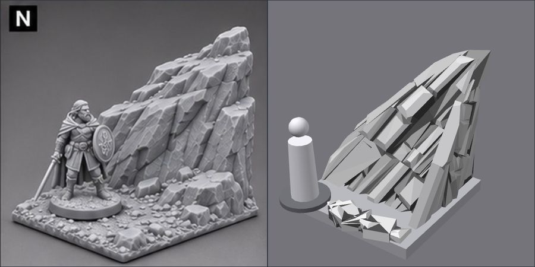
Wall N, our latest model beside panel N (left). Same light.
What moved the look, biggest first
O: broken faces on every free face; then a per-block depth push on level courses; then the light.
N: a free face parallel to the bedding, with each slab ending at its own line; then one mass in three levels.
Both: corner chips; few, large faces; offsets falling by 0.4 a level; eased lips.
Little help: hew (jittered facets), tilt planes beyond 0.3, many chips, a second finer skin, round pockets.
Lighting
Judge in grey: a hemisphere fill (about 0.6), one soft key from above front left, and cavity darkening baked per vertex (rays over about 7 mm). Multi-light shadow-map occlusion went dark; baked per-vertex worked. A coloured, flat light hides fine relief and hides faults.
7 · The recipe
Building a wall from nothing, coarse to fine
This is the specification. All lengths are mm at the 35 mm square. Tags show where a number comes from: [sheet] a generated sheet, times 1.4; [photo] the unpainted panel, which wins over the sheets; [rounds] found by building it. [rebuild] found when two builders followed this recipe from scratch (section 8). Z is up; the wall stands at the back and right, the figure’s open space at left and front; judge from azimuth about +24°, elevation about 30°.
The general case
0 · Rules that hold at every step
Everything stays solid. A piece moves only its own share of the free face (setback, tilt); the rock behind is one body. No plates, no slits, no floating piece. [rounds]
Cut, do not scatter. Structure is planes cut into a cell (half-spaces), never jittered points, never a convex cell inside a convex cell. Surface detail that branches or curls (a crack, a pit) is not a half-space: it is a groove or notch carved into one face, held at zero along the face’s outline so the solid stays closed. [rebuild]
Say the frame. x runs along the wall as the camera sees it, left to right; y runs away from the viewer; z is up. A face’s direction is given by what the camera sees (“the slope faces the camera, turned 30–40° to its right”), never as a bare compass number. [rebuild]
Budget. Form 70–80%, structure 15–25%, surface 5–10% of the read. Count: 1–5 dominant masses; a few dozen pieces on a wall, not hundreds. [sheet]
Few angle families (table in section 3), 1–3 fracture sets 20–60° apart.
Print floor. Nothing under 0.4 mm; keep ledges and features wide enough to read at the tabletop; overhang target 55°, band to 65°. [sheet]
1 · Mass (form, 70–80%)
Block out one to three volumes covering about 0.52–0.60 of the tile depth L (35 mm), with open space of 0.20–0.24 L on each side for the figure. Keep clearance of at least 0.35 H on the open side. [sheet]
Wall height H: the sheets say 38–43, but against the 35 mm plate the photo’s O wall is about 27–31 plus caps, and N’s crest about 33–36; at 38–43 the rebuild’s O stood 1.3 times too tall, and its N came down to a cap of 33. Measure H against the plate in the photo. [rebuild] Tiers or layers of 3–4: O .26/.26/.28/.20 H, N .38/.28/.22/.12 H, but use three courses on O and the panel’s run on N. [sheet] [photo]
Silhouette first: stepped skyline (O) or a straight rising crest (N). Judge the dashed outline of section 1 before adding anything. [rounds]
2 · Primary planes and breaks (structure, 15–25%)
Cut the mass with the dominant set: spacing .08–.25 H (3–10 mm on a 38 mm wall) for fine sets, .20–.50 H for blocks. Cells no narrower than 0.4 of the spacing.
Add the cross set at 60–120° (about 90°), carry 0.1–0.35. Lean its planes off square a little: up to about 12° on blocks (square reads as brick, over 25° as shards), but only 3–4° on a slab face (N v13: a 9° spread read as quartz). [rounds]
Give each cell its own offset along the free face’s normal: O 0–6 per block (up to 7.5); N 2–2.8 per slab plus 1.2–1.8 per cell. Steps are the lines where cells meet.
Where two cut faces meet (slope and end, front and side), split the rock by the plane that bisects their angle, and let each face’s pieces keep only the half nearer to it. Without it, pieces running back behind one face fill the other’s setbacks. [rebuild]
Ledges step back from the viewer (along y), course by course, so the wall reads as a stair seen from the front; read as columns along x they make a tower. Depth .10–.35 H, setback per tier .05–.30 of the depth, tread 0–10°, riser 70–90°. Make one recess deep (6–8) with the cell above set forward (2–3): that is the overhang.
3 · Skin over core, levels (still structure)
Cut each cell again, in the same families, at 0.6 and 0.4 of the spacing above; a crack lives inside its parent. Offsets 0.4 of the level above (O: a tenth).
On every free face, not only the front: tops, ends, crests.
Apply the finest level to 50–80% of cells, in a fixed seeded order. Leave the rest whole.
Give each piece its own tilt, small: 0.2–1.2° on a block face (O v14), up to about 3° on a slab face (N v13); tops lean at most about 8°. Variety comes from where pieces start and stop, not from their angles. [rounds]
4 · Edges
70% of edges soft (0.7–2.8), 30% crisp (0–0.5). Top-front edge of most blocks: a plane 1.6–3.4 in, but never more than 0.3 of the block’s height (on a 3–5 mm cap it makes a loaf). A second on a side or vertical edge for about half the blocks.
N: eased lips on 85% of top edges, 28–52°, 0.5–1.4. A lip is a chamfer along the whole edge, or one that starts at a corner and runs part way; a single plane placed mid-edge cuts a whole triangle off the cell. [rebuild]
5 · Chips (surface)
Corner chips on 30% of top corners of leaf cells: plane along the averaged normal of the meeting faces, tilted up to 25°, 0.12–0.3 of the narrow side deep (0.9–2.8 mm).
0–2 per block; never more than 3 big ones. Aim a little upward (bright, upturned) on N.
Pit or dish = one plane cut into a face. Dishes 4–35 wide, 0.7–1.4 deep (to 7 on the rock scale), irregular, off any grid. Pits 0.4–2.8, 0.15–0.85 deep, clustered, in one patch of three or four faces, never uniform.
Grooves: never under 0.4 wide or deep (two numbers in the N case below were, and did not read). 0.7–2.8 wide, 0.4–1.7 deep, on 30–55% of cells wider than 4, along the slab, as a lowered strip (never a gap). [sheet]
Cracks 0.4–0.7 wide, 0.4–1.1 deep, V-shaped, in straight lengths with angular kinks. Their width varies along the length, the lips are chipped, one side may sit slightly proud, and each runs from the edge of a plane to the edge of another or stops on the crack it meets. In the photo they are long, branch, and meet the block’s edges, dividing a face into a few irregular polygons; short isolated scratches read as gouges (O v14). Sample the face at 0.2 mm or finer under a crack, or it aliases into a ladder of steps (O Anew). [photo][rounds]
Grain last, 0.15–0.85, stretched along the bedding, under the detail only.
7 · Foot and rubble
Small blocks of the wall’s own rock, 3–6 mm, chamfered: a stair of 11–14 along the foot, and in the photo 20–40 more, smaller, over the open plate and round the figure’s base. [photo]
Keep a solid base behind the shingles so no gap shows the ground (N).
8 · Check
Judge in grey with a soft key and cavity shading, beside the unpainted panel at the same view; random seeds must all read right.
One body, closed, no sliver under 0.4 of its parent, nothing under 0.4 mm, overhang within the band.
The N case: the slanted slab
Volume: one box cut by a top plane rising along x, crest from 13 to 43 mm (through (3, 10, 13), slope about 0.94). Cap near 36. The right end is a cut face with its own steps. A slope plane plus a flat cap reads as a pyramid.
Beds: one set, dip 50° in section (the panel; sheets say 32–38°), the free face parallel to it and seen nearly face on from the panel’s camera, turned 30–40° to its right (dip 47–52°; at 52° with a crest above 38 the wedge is a fin). Slab faces nearly parallel, within 3–4°. Slabs read thick and long: faces 2.5:1 to 5:1, cells about 12×40 mm, then 8×18, then 5×9 on half of them (thicker slabs were the biggest gain in N v13; 2.6–5 mm slabs read as blades). The outlines of the slabs are irregular, not beam-like. The slabs’ long sides run diagonally on the face, so on screen they climb from lower left to upper right: that diagonal blade is N’s character, and a cross set at right angles to the strips turns it into a grid. [photo][rebuild]
Layer ratio across the ledges .38 / .28 / .22 / .12 of the face width (about 8 mm each). [sheet]
Slab ends: each slab ends at its own line parallel to the crest, 0–14 mm back, mostly long, so shingles recede by their thickness. The innermost slab is full width, so no ground shows.
Cross cuts every 22–36 (then 9–14 inside), skewed 6–12° in the face plane (square reads as brick), lean 3–4° (up to 12° only on the end face), about a quarter of the cracks, carry 0.1–0.15. At carry 1 it is a tilted brick grid.
Offsets: setback along the free face normal, per slab 2–2.8 and per cell 1.2–1.8 at the coarsest level (3.8 and 2.2 cut canyons; under 2 the risers vanish and slabs read as cards), then 0.4 of that per level, never under 0.4 mm. The step along the slab set goes one way, so the slabs overlap like shingles; a random sign reads flat. Per cell alone reads as loose blocks; pushing along y makes slabs stick out against the bedding. [rounds]
Detail: eased lips 85% (28–52°, 0.5–1.1); corner chips 30%, 1–2 per cell aimed up, 0.8–1.9 deep; grooves along the slab on 55% of cells wider than 4, 0.4–0.6 wide, 0.4–0.6 deep; no gravel on the ramp; foot 11 flat chamfered blocks.
Avoid: slope too steep or too segmented; too many vertical cuts; faces turned at many angles (quartz); identical bevels on every slab (stacked beams); over 3 chips per cell (destroys the ramp); a front plane cutting across the beds.
The O case: stacked blocks
Mass: three boxes stepping up and back; heights .26 / .52 / .80 H (sheet), footprint .20 / .60 / .20 L; H about 38. A foot stair at the right, and the leftmost column standing proud to give the return face.
Courses: three, each 9–11 high against the plate (11.5–14.5 stood too tall) (sheet says four of about 10; the photo wins). Level beds; tops lean at most 8°.
Blocks: about 12–22 wide, three wide blocks to a course, joints about every 14 (width to height about 1.2:1 in the photo; the sheet says 1.6–2.4:1 and gave four narrow rows that read as rubble).
Joints: about a third of the vertical joints repeat the one below (carry 0.35); the others are staggered by at least 3.2.
Depth push: 0–6 per block (to 7.5); one recess 6–8 and the cell above forward 2–3; setback per tier grows with the course index.
Faces: vertical 85–90°, flat. Most faces stay whole as pieces (about 60%): the panel’s many small polygons are drawn by the crack network of step 6, not by more pieces (O Anew split 70% of faces into 4–7 pieces and read busier than v14). The rest are split once into a skin piece set back 0.1–0.3 and turned 0.2–1.2°, so the block outline dominates (O v14; a skin of 2–5 pieces read as rubble, faceted relief as crystal). The face’s texture is cracks and a few chips, not facets. [rounds]
Edges and chips: eased edges all round the top: a chamfer 1–2 (to 3.4 on the top front) on the top-front and both top side edges, and on the vertical front edges of about 80% of blocks, slightly irregular (O v14); 1–3 corner chips of 0.9–2.8; cap blocks 3.5–6.5 high on the top course to break the skyline.
Joints must be real: a printed tile has no shadow map, so joints are 0.4–0.7 wide and read dark because they are deep (at least 3 times their width) or because the neighbour stands proud.
Avoid: rounding the blocks (large tilts, or more than three big chips); diagonal striations (they read as N); a pit cell inside a cell; faceted relief on faces (reads as crystal); short isolated cracks (read as gouges).
8 · The rebuild
Both walls again, from this page alone
Two builders who had never seen our wall code rebuilt O and N from this page, the sheets and the unpainted photos. Each first built the recipe exactly as written, then made two passes by eye and wrote down every place it had to leave the recipe. The recipe above now carries those corrections, marked [rebuild]. The strips put every committed version beside the panel. The first versions were drawn in flat colour, the later ones in the grey light of section 6. The cameras differ a little from version to version.
Wall O, every committed version, then the rebuild: the recipe as written, and after two passes.
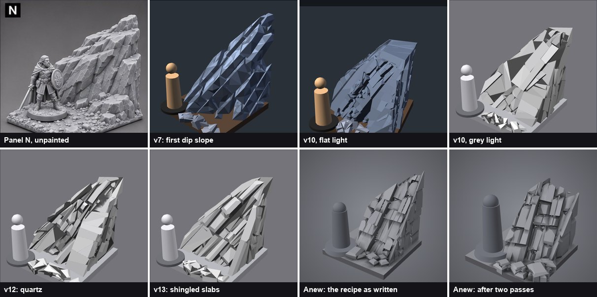
Wall N, every committed version, then the rebuild.
What it showed
Neither rebuild beats the last iterated version. O v14 and N v13 are still the best. Both builders said so of their own work. The page holds the principles, but what twenty-five rounds learned lived partly in the code, as constructions, not as rules.
The recipe as written gets the structure, not the look. O came out as a tower of plain boxes, 1.3 times too tall. N came out as the right shingled slope, but its slabs were paper-thin shards. Every number held; what failed was what the numbers left unsaid.
The silent conventions were the biggest errors. These were:
which axis O’s tiers step along (columns made a tower);
which way “facing 262°” points (N’s slope was seen edge-on);
the wall’s height against the plate, where the sheets are wrong and the photo is right.
None of these is about rock. They are the frame, and a reader can’t recover them.
Some steps can’t be built as written.
A half-space can’t make a branching crack or a notched pit. On a solid, a crack is a plane cut through the block with a chamfer on each side, and a branch is a second cut on one side of the first; on a heightfield it is a carved groove.
A mid-edge lip cut by one plane takes a whole triangle off the cell.
Two faces cut into one mass fill each other’s setbacks unless a mitre plane divides the rock between them.
Our own rounds had solved each of these in code and never written it down.
Two numbers were under the recipe’s own 0.4 mm floor: N’s groove width and its finest step. The rebuild caught what our rounds had carried along unchecked.
The rebuild confirmed what made each wall work. Chamfers that ease the top edge are what make a block read as rock rather than a box, on both walls. Rubble over the whole plate, not only along the foot, is in the photo and was in none of our versions.
O: the face detail is lines, not pieces. The rebuild found that faces kept whole read as bare boxes, and split most of them into four to seven pieces. That came out busier than v14, whose whole faces carry long cut cracks. The panel’s many small polygons are a crack network drawn on a few big faces. Its cracks were also 1.7 mm wide where the photo’s are about 0.5, because narrower ones aliased into ladders: the fix is a finer mesh under the crack, not a wider crack.
N: the diagonal blade is the character, and no rule says so. The literal build kept the long slabs climbing diagonally across the face. When the second pass thickened the slabs and squared the cross cuts, they turned near vertical and the slope became a grid of blocks. v13 keeps the diagonal. The recipe now says it outright.
Still unsolved by any version:
the panel’s worn, slightly soft many-sided outlines;
pits that read as chips rather than dents;
the fine cleavage texture on top faces;
the figure’s scale (the photo’s figure stands about 22 mm, so plate, wall and figure can’t all be matched at once).
The rebuilds are on their own pages, “Wall O, Anew” and “Wall N, Anew”, each with its stages, seeds and a table of every recipe rule it kept or changed.
9 · How it maps to the language
Which Cliff Cleaving words carry what
The proposal’s words are cleave (with dip, facing, spacing, bend, carry), inside (with cover), setback, tilt, top, joints and chips. This table lists what each carries and what nothing reaches yet. Open questions only; no word is proposed here.
Primitive or idea
Carried by
Not reached
Planes and facet changes
cleave dip, facing, spacing; tilt per cell
creases that wander (a bend that is not a lean per plane)
Breaks and edges
chips on edges of every leaf cell
the 70/30 soft and crisp split; a chamfer size per edge
Steps and ledges
setback per cell; cleave dip 0 with spacing
a setback range that crosses zero (the overhang); setback growing with the course index
Chips and notches
chips at corners
an aim for a chip; a chip taken from a face, not a corner
Dishes
(pockets on the rock; on N cells lowered with setback and bumpSize)
an irregular dish with a wandering rim; a pit as a plane cut into a face
Pits
nothing yet on the cliff
clusters of small pits of mixed size
Ridges and swells
nothing
a raised band that fades; top as a plane per cell is held open
Cracks and fissures
joints (width), carry, inside (persistence)
a crack that tapers; a step across a crack that dies out
Undulation
nothing smooth: cells are flat
a low broad swell across a face
Grain and striation
nothing (a finish, not massing; the rock explorer has grain)
depth of grain; direction along the bedding
Layering and shingling (N)
cleave dip, spacing; top per cell for each slab’s end
a floor cell so the ground never shows between slabs
Tiers, caps, shelves (O)
cleave dip 0, carry, setback
caps that shrink near the top (a spacing that falls with height)
Skin over core, levels
inside, cover, setback, tilt
a skin depth as a property of the nested set; a minimum piece as a rule beyond spacing’s lower end
Cavity darkness, joints dark
not a language matter (paint and light)
whether a joint’s depth belongs to joints
Open questions
May setback be negative, so one range covers both the recess and the overhang above it?
How does a dish (irregular, one plane cut into a face) differ from pockets on a rock, and does it need a face aim like a chip?
Does a bedding set need a floor on each cell’s top, so shingles never show the ground?
Is top’s slope per cell the same thing as a ridge, a swell and a tapering crack, or three things?
Where does a skin depth live, and is a minimum piece width part of spacing or a separate rule?
Is a share of soft against crisp edges a property of chips, or of the cliff?
Does grain on a cliff belong to the language at all, or only to finishing?